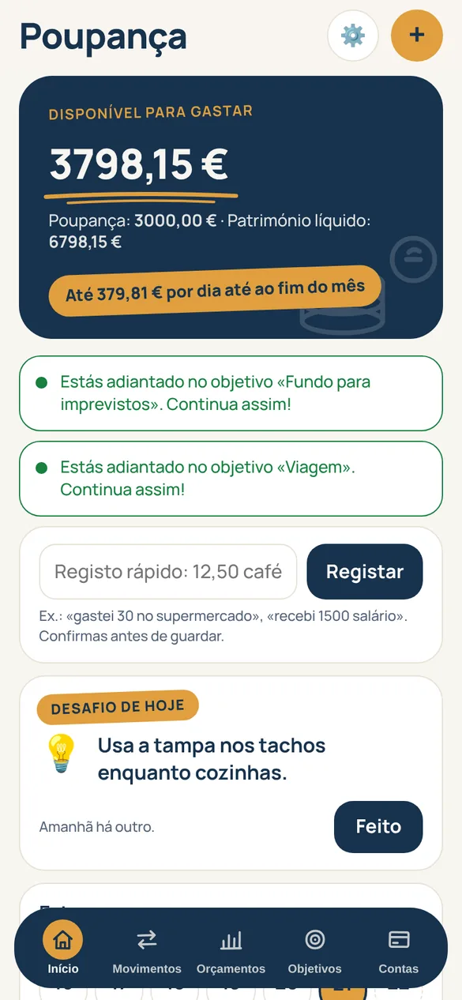
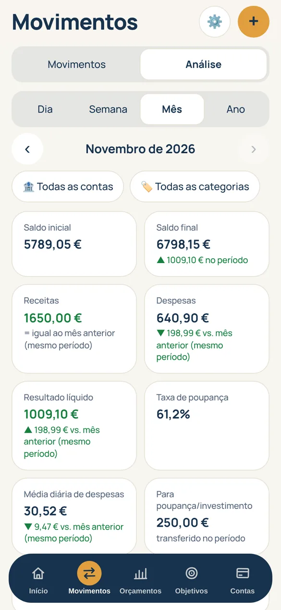
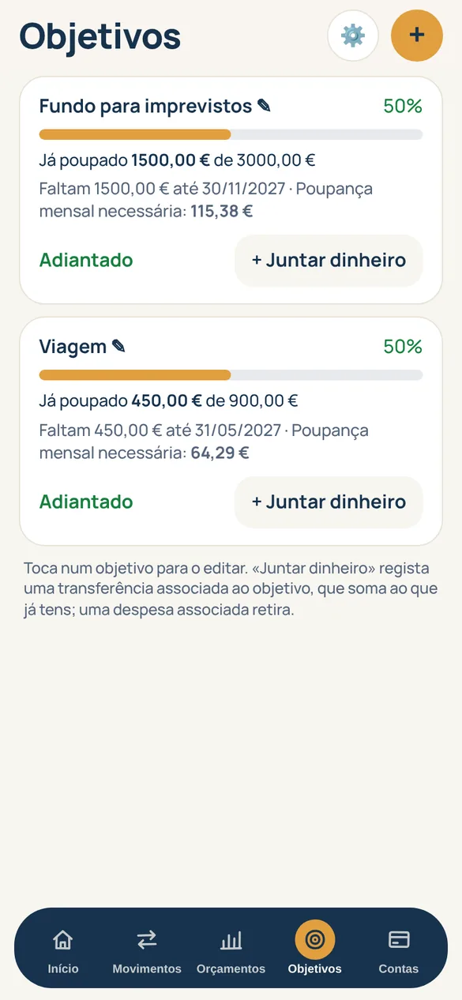

Poupança
Organiza o dinheiro do dia a dia no telemóvel. Sem conta, sem anúncios, e os dados ficam só no teu telemóvel.



O que a app faz
Registo rápido
Escreves «12,50 café» e o movimento fica registado.
Contas e movimentos
O saldo de cada conta, com receitas, despesas e transferências.
Análise do mês
Para onde vai o dinheiro, comparado com o mês anterior.
Objetivos
Quanto já tens, quanto falta e quanto precisas de poupar por mês.
Desafio do dia
Uma ideia nova todos os dias para gastar menos.
IRS e Excel
Faturas organizadas para o IRS e exportação para Excel.
Como instalar
iPhone
- Abre poupanca.bemcontadopt.pt no Safari.
- Toca em Partilhar (o quadrado com a seta para cima).
- Escolhe Adicionar ao ecrã principal.
Android
- Abre poupanca.bemcontadopt.pt no Chrome.
- Toca nos três pontos (⋮).
- Escolhe Instalar aplicação (ou Adicionar ao ecrã principal).
Estás no computador? Aponta a câmara do telemóvel para este código e segue os passos acima.
Privacidade
Os dados que registas nunca saem do telemóvel: não há servidor nem conta. Por isso, faz uma cópia de segurança de vez em quando (⚙️ Definições, Cópia de segurança). Esta página e a app contam, de forma anónima e sem cookies, as visitas e as instalações, para sabermos quantas pessoas a usam.
A Poupança é uma app pessoal e gratuita. Não é aconselhamento financeiro.